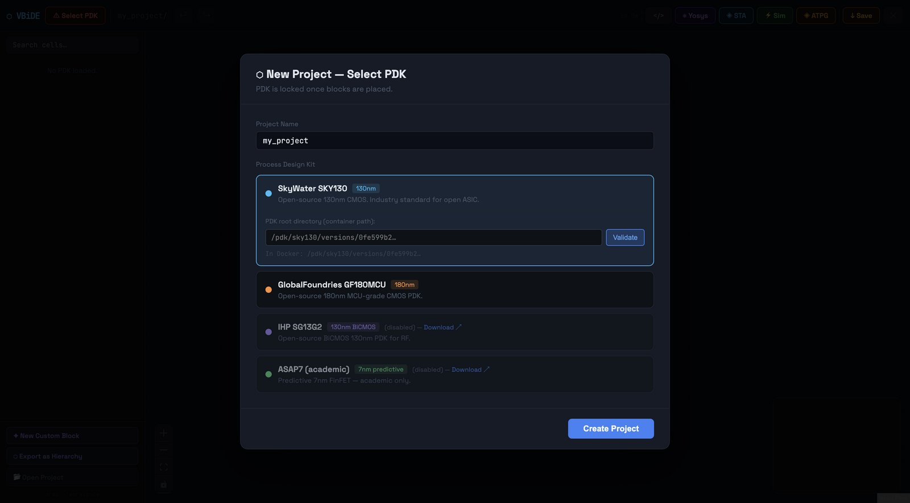
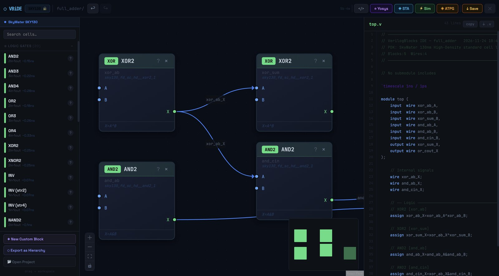

01
Pick a process
Start a project and choose a PDK: SkyWater SKY130 or GlobalFoundries GF180MCU. The cell library on the left then holds that process's real standard cells, with their ports and typical delays.
VerilogBlocks IDE is a desktop app for learning digital and ASIC design. Drag real SkyWater SKY130 standard cells onto a canvas and wire them up. The app writes the Verilog, simulates it with Icarus Verilog, synthesises it with Yosys, and reports timing and fault coverage.
Yosys and Icarus Verilog are included. Nothing else to install.

From an empty canvas to a simulated, analysed circuit. Recorded from the real app, nothing staged.
One design, start to finish. Every picture below is a screenshot of the app working on the same 1-bit full adder.
Start a project and choose a PDK: SkyWater SKY130 or GlobalFoundries GF180MCU. The cell library on the left then holds that process's real standard cells, with their ports and typical delays.

Drag cells onto the canvas and connect output pins to input pins. Each wire is named after the pin that drives it. The app stops you connecting pins of different widths or giving an input two drivers.
Undo, redo, copy and paste work the way you expect.
The structural Verilog updates as you draw. Unconnected pins become the module's ports, and each cell
becomes an assignment you can read line by line. Copy it or download top.v.

Choose a stimulus for each input: a constant, a clock, a sequence or random values. Press ▶ iverilog and the app writes the testbench, runs Icarus Verilog and opens the waveform.

Static timing analysis uses each cell's delay to find the critical path, the slack and the maximum clock frequency. Cells on the canvas are coloured by their slack.

ATPG (automatic test pattern generation) asks: if any wire were stuck at 0 or 1, is there an input pattern that would show it? Yosys turns the design into gates, and atalanta finds the patterns and reports the fault coverage.

Built for classrooms and self-study, using the same open-source tools that real open ASIC flows use.
SKY130 and GF180MCU cell libraries, with their pins, logic and typical delays.
Maps your design onto the PDK's Liberty cells and reports which cells were used and the chip area.
Generated testbench, one-click run and a built-in waveform viewer.
Critical path, slack and maximum frequency, shown on the canvas.
Stuck-at-0 and stuck-at-1 faults, test vectors and a coverage figure.
Save a design as a reusable block and place it inside bigger designs.
Everything runs on your computer. Projects are ordinary files in your user folder.
MIT-licensed, on GitHub. A Docker version runs it in the browser for labs and servers.
Free for everyone. Pick your system below. Older versions and release notes are on the Releases page.
Open the .dmg and drag the app to Applications. The app isn't signed by Apple yet, so macOS may say it is "damaged". Run this once in Terminal, then open the app normally:
xattr -dr com.apple.quarantine "/Applications/VerilogBlocks IDE.app"
The installer isn't code-signed yet, so Windows SmartScreen may show "Windows protected your PC". Click More info, then Run anyway.
Make the file executable, then run it:
chmod +x VerilogBlocks*.AppImage
Prefer the browser? Run the Docker version, or build it from source: see the README. Fault coverage (ATPG) needs atalanta, which you install separately because its licence only allows teaching and research use.